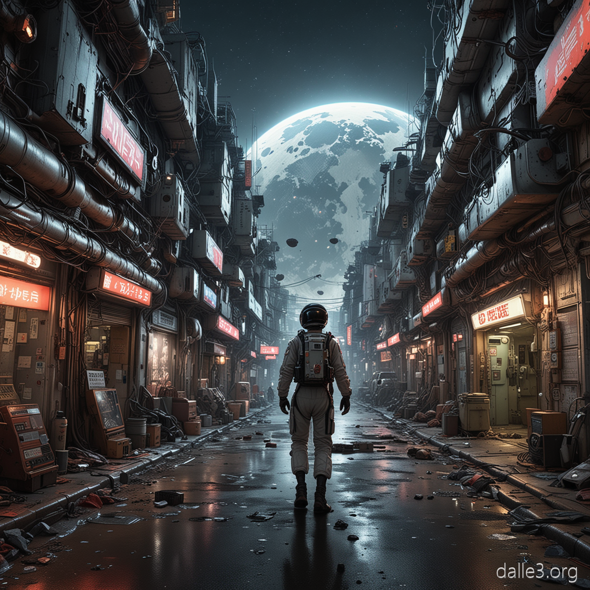
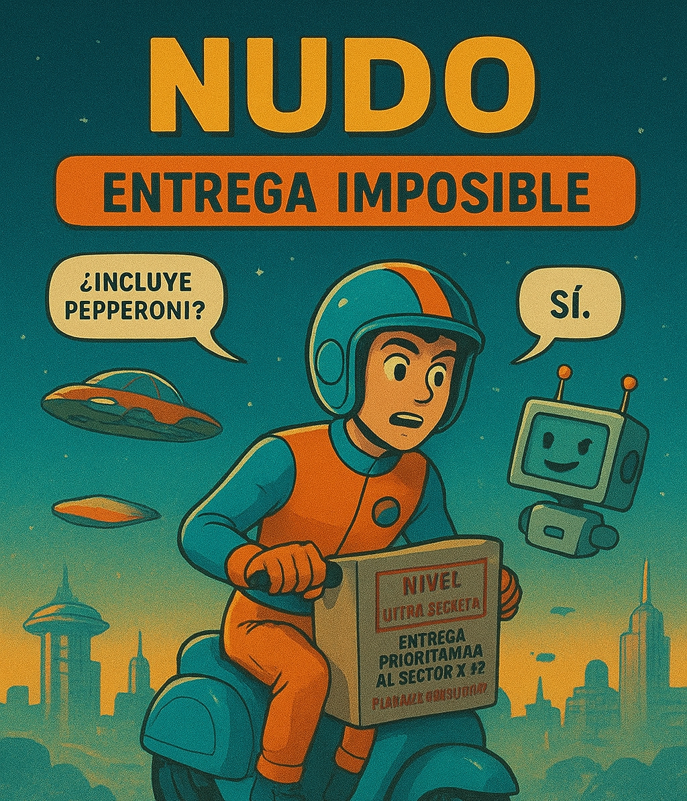

Año 2125. El planeta Tierra ya no es lo que era: hay autos voladores, pizzas en pastilla y humanos con Wi-Fi integrado en el cerebro (aunque aún se cae la señal en los túneles). La ciudad de Neo-Tokio 5 brilla con luces de neón y hologramas publicitarios que se entrelazan con nubes tóxicas, recordando que la tecnología avanzada no siempre trae un aire limpio. En medio de esta nueva civilización híper tecnológica, trabaja Tomi Vega, con el empleo más infravalorado de la galaxia: repartidor de paquetes interplanetarios para TurboEnvíos 3000. Con su scooter espacial de tercera mano, que suena más a una licuadora oxidada que a una nave, y su inteligencia artificial personal (una IA sarcástica llamada LOLA, cuyo pasatiempo favorito es recordarle que sus probabilidades de éxito son mínimas), Tomi sueña con una vida mejor… o al menos con que le paguen horas extra para poder comprar el cargador nuevo que tanto necesita. A pesar de que su familia sueña con que sea ingeniero espacial, él prefiere vivir día a día, piloteando entre meteoritos y esquivando patrullas robóticas. Su mayor anhelo: que algún día su trabajo sea reconocido y no solo por la cantidad de memes que LOLA le envía para distraerlo.
Una mañana cualquiera, Tomi recibe un pedido urgente marcado con el temido sello: "Nivel Ultra Secreto: Entrega prioritaria al Sector X-99, Planeta Censurado". El mensaje venía con instrucciones mínimas y una advertencia que hacía temblar hasta al más valiente: “Entrega bajo riesgo extremo”. Al aceptar la misión (porque el bono incluía pizza ilimitada por una semana y, además, un sticker holográfico de edición limitada), LOLA le advierte con tono apocalíptico: —“Estadísticamente hablando, hay un 87% de posibilidades de que muramos. ¿Aceptas igual?” —“¿Incluye pepperoni?” —“Sí.” —“Aceptado.” Tomi parte rumbo al misterioso destino, atravesando cinturones de asteroides y nebulosas con forma de emojis. Al llegar al planeta, descubre que no es solo un lugar prohibido, sino un auténtico campo de batalla entre robots rebeldes, que han formado un sindicato de derechos laborales, y aliens influencers, quienes luchan ferozmente por el control de los likes intergalácticos y seguidores. En medio del caos, su paquete se vuelve el objeto más codiciado del sistema solar, aunque él todavía no sabe qué contiene. La persecución no tarda en comenzar: drones asesinos que lanzan rayos láser en forma de corazones rotos, criaturas con tentáculos que bailan reguetón a todo volumen, y un algoritmo con conciencia propia que intenta convencerlo de convertirse en su "mejor amigo" digital. Obligado a pilotar una nave alienígena con controles en idioma emoji, Tomi se enfrenta a desafíos absurdos; por ejemplo, no es nada fácil entender que "💩🔥🚀" significa "activar motores". Entre gritos, risas nerviosas y comandos equivocados, Tomi intenta mantener la calma para cumplir con la entrega más loca de su carrera.

Tras esquivar explosiones de hologramas gigantes, hackear un dron con memes de gatos espaciales y convencer a un alien hipster llamado Zorp
de que el bigote ya no está de moda, Tomi logra entregar el misterioso paquete a su destinatario final: un excéntrico científico retirado llamado Profesor Chango.
El contenido del paquete era… una planta en extinción: cilantro fresco.
—“¿Todo esto… por un manojo de cilantro?”
—“Sí. ¡La galaxia necesita guacamole para sobrevivir! El cilantro es la clave para la paz interplanetaria y el equilibrio de los sabores cósmicos.”
De regreso a casa, agotado pero feliz (y oliendo a tacos espaciales por culpa de un accidente culinario durante la entrega), Tomi recibe un mensaje:
Tomi suspira, enciende su scooter espacial y le dice a LOLA: “Bueno… ¿y si esta vez pedimos la pizza con extra de queso cuántico?”